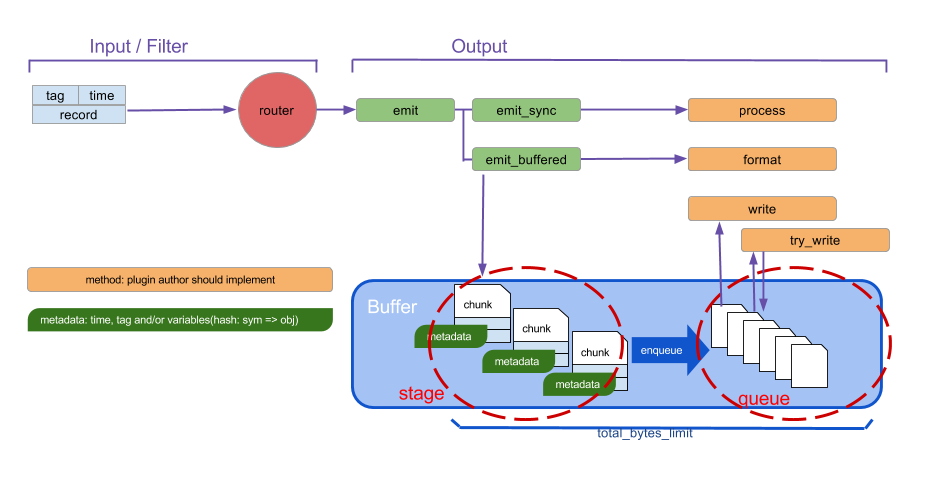
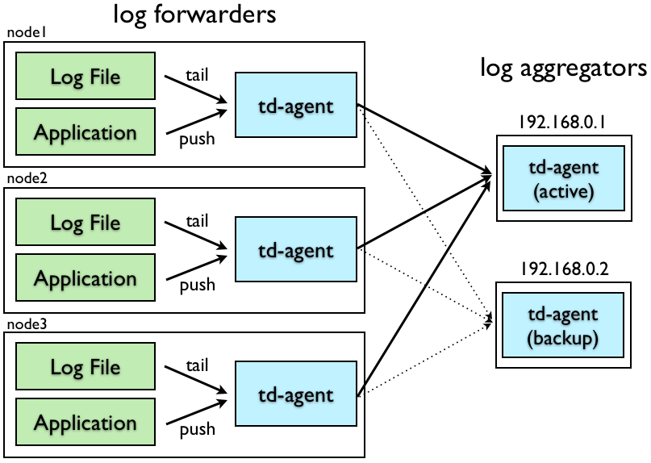

配置文件允许用户控制
Fluentd的输入和输出行为，通过（1）选择输入和输出插件（2）指定插件的参数。Fluentd的正常运作，这个配置文件是必须的。
参考链接
[GitHub]?https://github.com/fluent/fluentd
[Doc]?http://docs.fluentd.org/articles/config-file
[Example]?https://github.com/fluent/fluentd/tree/master/example
文件路径
RPM or Deb
如果你安装Fluentd运用的是rpm或是deb 的安装包，这个配置文件在/etc/td-agent/td-agent.conf这个目录。重新安装将会安装conf 配置文件。
默认配置文件路径：/etc/td-agent-td-agent.conf
Gem
如果你安装Fluentd用的是Ruby Gem，你可以创建一个配置文件运用下面的命令。发出一个终止信号将会重新安装配置文件。（如果你修改了配置文件—fluent.conf文件，ctrl c 终止进程，然后在配置文件下重新启动）
ctrl c |
指令列表
这个配置文件由以下指令组成：
- source 源指令决定输入资源。
- match 匹配指令决定输出目的地。
- filter 过滤指令决定事件处理管道。
- system 系统指令设置全局系统配置。
- label 标签指令决定内部路由的输出和过滤器分组。
- @include @指令包含其他一些文件。
输入指令 Source Directive
Fluentd 的输入源是通过选择和配置所需要的输入插件使用source指令。Fluentd的标准输入插件包含http和forward（转发）模式。
每个source指令必须包含一个type（类型）参数。type参数指定输入插件使用。
http：使 fluentd 转变为一个 httpd 端点，以接受进入的 http 报文。forward：使 fluentd 转变为一个 TCP 端点，以接受 TCP 报文。
输入插件forward
配置文件说明
接收来自于监听tcp/24224的程序日志 |
练习1_实现python程序日志搜集并标准输出至默认日志文件
目标：
- 学习使用输入插件forward
- Source：通过python程序进行日志搜集
- Match：日志标准输出到
/var/log/td-agent/td-agent.log
第一步 修改配置文件vim /etc/td-agent/td-agent.conf;重启服务
vim /etc/td-agent/td-agent.conf |
第二步骤 编写python程序
# python代码要能够连接fluentd服务，需要第三方的python包fluent-logger |
第三步 执行python程序
python test.py |
第四步 查看日志输出
tail -f /var/log/td-agent/td-agent.log |
输入插件http
配置文件说明
http://this.host:9880/myapp.access?json={"event":"data"} |
练习2_http输入，stdout输出
目标：
- 学习使用输入插件http
- Source：通过http服务进行日志搜集
- Match：日志标准输出到
/var/log/td-agent/td-agent.log
第一步 修改配置文件并重启服务
搜集8888端口的http服务日志 |
第二步 发送http请求
- Linux中通过curl发起请求
curl http://192.168.1.5:8888/booboo_file -d 'json={"booboo_file":"指定文件"}' |
- 浏览器中输入
http://192.168.1.5:8888/booboo_file?json={"booboo_file":"指定文件"}

第三步 查看搜集的日志信息
tail -n 1 /var/log/td-agent/td-agent.log |
练习3_http输入，指定文件输出
目标：
- 学习使用输入插件http
- Source：通过http服务进行日志搜集
- Match：日志标准输出到
/var/log/td-agent/td-agent.log
第一步 修改配置文件并重启服务
搜集8888端口的http服务日志 |
第二步 发送http请求
- Linux中通过curl发起请求
curl http://192.168.1.5:8888/booboo_file -d 'json={"booboo_file":"指定文件"}' |
- 浏览器中输入
http://192.168.1.5:8888/booboo_file?json={"booboo_file":"指定文件"}

第三步 查看搜集的日志信息
tail -n 1 /var/log/td-agent/booboo_file/buffer.b56c781ee19310426542cc19e3db769f1.log |
Source Directive配置小结
每个 source 指令必须包括 “type” 参数，指定使用哪种插件。
Routing（路由）：source 把事件提交到 fluentd 的路由引擎中。一个事件由三个实体组成：tag、time 和 record。
tag：是一个通过 “.” 来分离的字符串（e.g. myapp.access），用作 Fluentd 内部路由引擎的方向。time：时间字段由输入插件指定，并且必须为 Unix 时间格式。record：一个 JSON 对象。
在练习3_http输入，指定文件输出中
Plugin（插件）
用户可以扩展输入源Fluentd，通过编写自己的插件而超出默认选项。为了进一步关于fluentd 的信息，请参考 Input Plugin Overview 文章。
输出指令 Match Directive
match 指令查找匹配 “tags” 的事件，并处理它们。match 命令的最常见用法是将事件输出到其他系统（因此，与 match 命令对应的插件称为 “输出插件”）。?Fluentd 的标准输出插件包括 file 和 forward。
match 匹配模式
| 匹配模式 | 说明 | 举例 |
|---|---|---|
* |
匹配单个tag 部分 |
a.*，匹配 a.b，但不匹配 a 或者 a.b.c |
** |
匹配 0或 多个 tag 部分 |
a.**，匹配 a、a.b 和 a.b.c |
{X,Y,Z} |
匹配 X、Y 或Z，其中X、Y 和 Z 是匹配模式。可以和 *和 **模式组合使用 |
{a, b}，匹配a和b，但不匹配c |
<match> |
当多个模式列在一个<match>标签（由一个或多个空格分隔）内时，它匹配任何列出的模式 |
<match a.** b.*>匹配 a、a.b、a.b.c 和 b.d |
Fluentd 尝试按照它们在配置文件中出现的顺序，从上到下来进行 “tags“ 匹配 。

stdout：标准输出至/var/log/td-agent/td-agent.logfile:输出至指定文件forward：转发至指定服务器的tcp监听端口
输出插件stdout
配置文件说明
<match fluentd.test.**> # match后面的内容可以先看作是一个tag标识符号 |
练习2_http输入，stdout输出
练习同上
输出插件file
配置文件说明
<match booboo_file.**> #匹配到booboo_file的tag就输出到指定目录中 |
练习3_http输入，指定文件输出
练习同上
输出插件forward
forward缓冲输出插件将事件转发到其他Fluentd节点。这个插件支持负载平衡和自动故障转移（Ack.Active Active备份）。对于复制，请使用copy复制插件。
forward插件使用“φaccrual failure detector ”算法检测服务器故障。可以自定义算法的参数。当服务器故障恢复时，插件使服务器在几秒钟后自动可用。
forward插件最多支持一次和至少一次语义。默认值最多为一次。
配置文件说明
<match pattern> |
练习4_搭建Fluentd自动故障转移架构
[HA]https://docs.fluentd.org/v1.0/articles/high-availability
目标：学习使用输出插件forward实现自动故障转移

网络拓扑
To configure Fluentd for high availability, we assume that your network consists of ‘log forwarders’ and ‘log aggregators’.
Fluentd的高可用性配置，由”日志代理“和”日志整合“组成。本地的搜集日志的服务器为日志代理服务器，后面两台锁整合的成为日志整合服务器
日志代理服务器配置
TCP input |
日志整合服务器配置
Input |
Match Directive配置小结
Plugin（插件）
https://docs.fluentd.org/v1.0/articles/output-plugin-overview
输出插件的缓冲区行为（如果有的话）由单独的缓冲区插件定义。 可以为每个输出插件选择不同的缓冲区插件。 一些输出插件是完全自定义的，不使用缓冲区。
Non-Buffered
非缓冲输出插件不缓冲数据并立即写出结果。
- out_copy
- out_stdout
- out_null
Buffered
时间切片输出插件事实上是一种缓冲插件，但块是按时间键入的。
- out_exec_filter
- out_forward
- out_mongo or out_mongo_replset
- out_exec
- out_file
- out_s3
- out_webhdfs